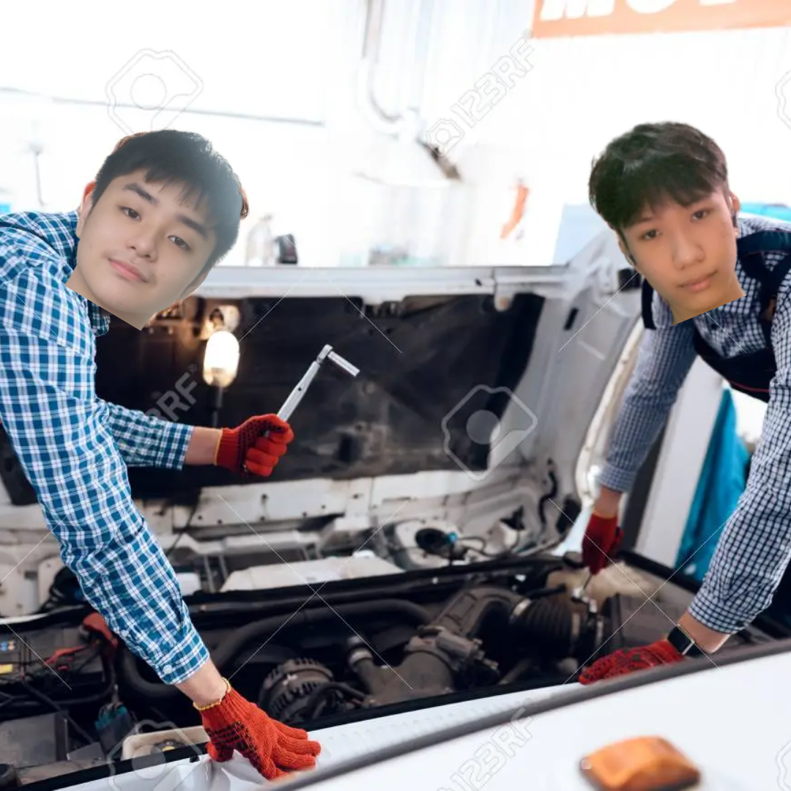
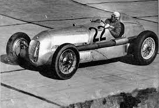
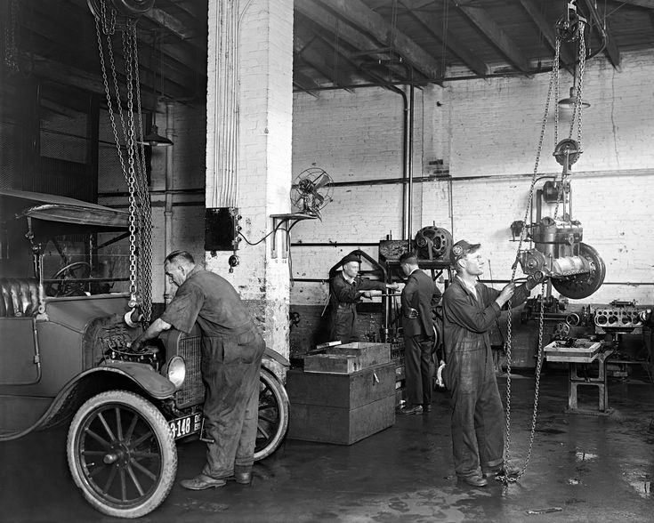
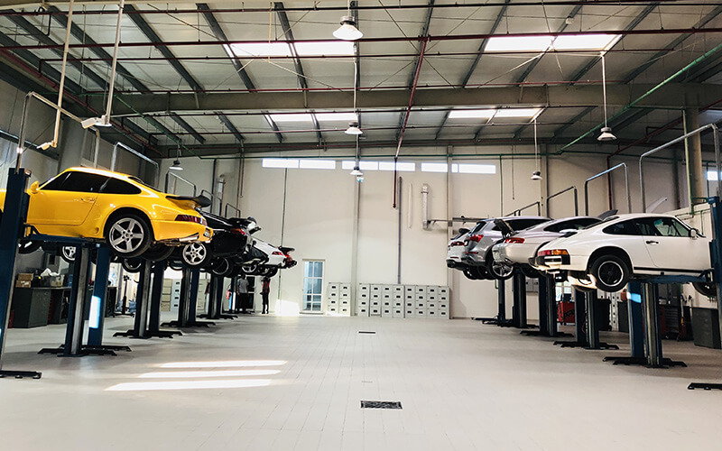
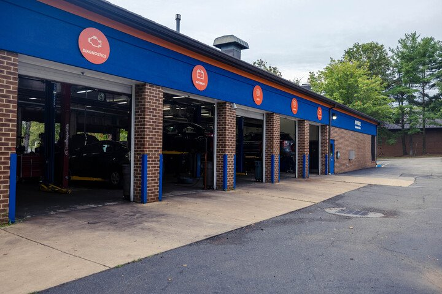

At Whip-O-Wrench, we are a leading mechanical workshop dedicated to providing exceptional automotive repair and maintenance services. With a
team of highly skilled technicians and state-of-the-art equipment, we strive to deliver superior quality workmanship and outstanding customer service.

Technicians & Mechanics
Technican James Guinto and Mechanic Ivan Reyes offers comprehensive services to keep your vehicle running smoothly.
From oil changes and tune-ups to brake repairs and suspension work, our experienced technicians handle it all.
Our workshop is equipped with advanced diagnostic tools to accurately identify and resolve engine issues.
Whether it's a strange noise, poor performance, or a check engine light, we'll diagnose and fix the problem efficiently.
We specialize in diagnosing and repairing electrical system faults. Our experts are skilled in resolving issues with wiring,
batteries, alternators, starters, and other electrical components.
History

1979-1989
James Guinto was born on April 26, 1969, in Philippines. He began his racing career in karting and quickly rose through the ranks of junior formulae.
In 1981, he and Ivan Reyes made their Formula 1 debut with the Jordan-Ford team, impressing with their speed and talent.

1990-2005
Both F1 drivers James Guinto and Ivan Reyes retired and opened up a mechanical workshop. With a rapid evolution in automotive technology.
Opening a mechanic shop meant embracing these advancements, investing in the necessary tools and equipment to effectively service modern vehicles.

2005-Present
As decades pass, In an ever-evolving automotive industry, upgrading a mechanical shop is crucial to stay competitive, improve efficiency, and meet the changing needs of customers.
So James Guinto and Ivan Reyes invested millions of dollars upgrading their shop exploring the benefits and considerations involved in upgrading a mechanical shop.

Branches
The automotive industry in the Philippines has witnessed significant growth in recent years, driven by increasing vehicle ownership and a rising demand for
quality repair and maintenance services. With this surge in automotive-related activities, establishing different branches of mechanical workshops across the
country brings numerous advantages for both the service providers and vehicle owners. James and Ivan explores the benefits of having multiple branches of mechanical
workshops in the Philippines. By establishing multiple branches, their mechanical workshops offers their services in various locations.
Branches in the Philippines
Here are three branches readily available in the Philippines.
Las Pinas City
24 Havana St 1800 Las Pinas City +63 63-2-6552286 Philippines
Quezon City
Edsa Cubao Quezon City +63 09129761 Philippines
Rizal City
183 Gen Mascardo 1400 Rizal City +63 03619081 Philippines